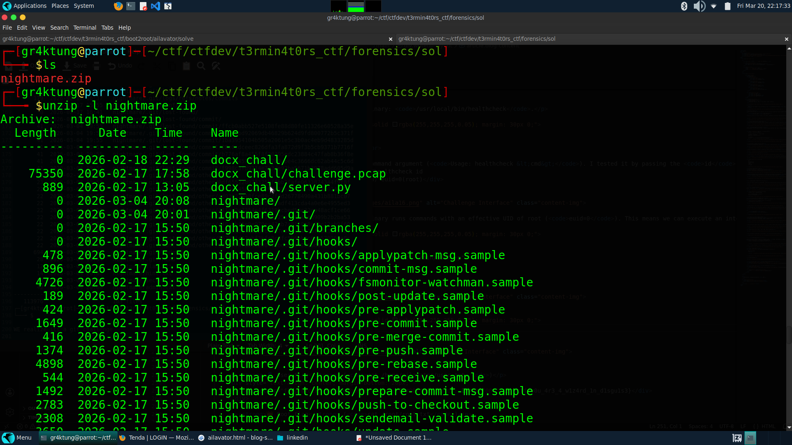
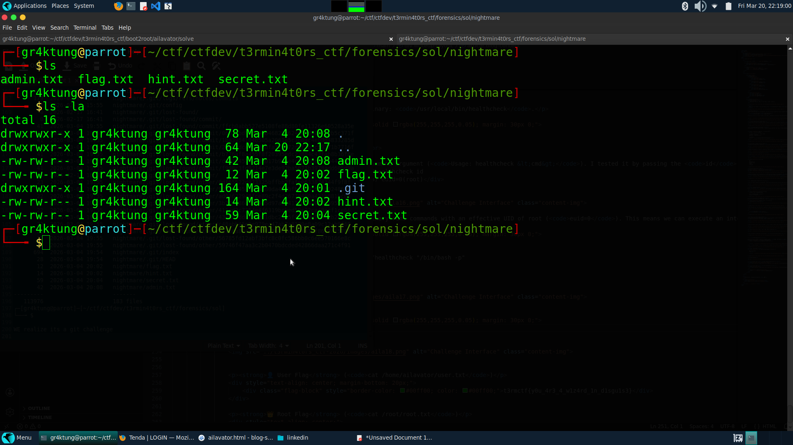
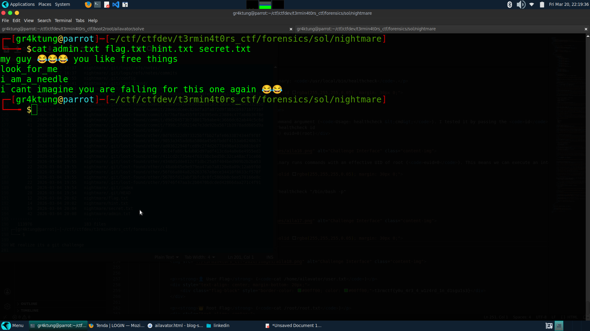
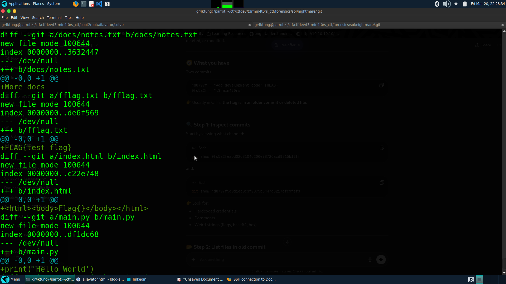
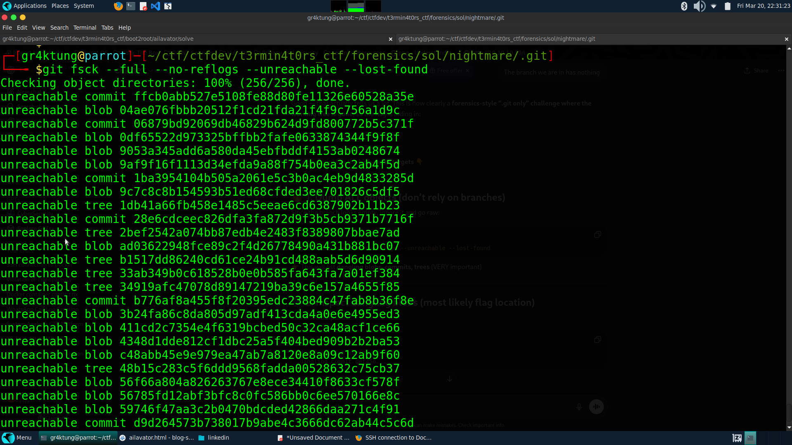
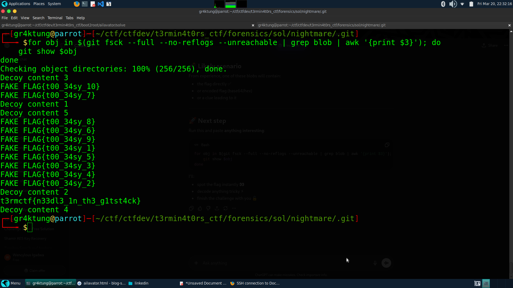

🧠 Challenge Writeup: Tony St4ck
Howdy!!!, I'm the creator of this challenge in the t3rmin4t0rs CTF 2026.
🧭 Initial Analysis & File Extraction
We are provided with a ZIP file named
nightmare.zip. Listing its contents reveals our starting point:
unzip -l nightmare.zip
🔍 Observations:
The archive contains a directory
nightmare/housing:
- A
.git/directory (⚠️ important)- Several text files:
flag.txt,hint.txt,secret.txt,admin.txt
🧠 Key Insight: The presence of a `.git` directory strongly suggests this is a Git forensics challenge.
📂 Inspecting Visible Files
First, I checked the contents of the visible text files to see if the flag was lying around in plain sight:
cat admin.txt flag.txt hint.txt secret.txtOutput:
my guy 😂😂😂 you like free things look_for_me i_am_a_needle i cant imagine you are falling for this one again 😂😂
🔍 Interpretation: These are clearly decoys and hints. The phrase "i_am_a_needle" implies a "needle in a haystack" scenario—the real flag is hidden among many objects.
🔎 Git Enumeration
Navigating into the
.gitdirectory, I started checking the commit history:git logOutput:
commit 4d8797f... (HEAD -> development) Add development code commit 0fc5a2f... t3rmin4t0rs
🔍 Inspecting Commits:
Checking the first commit (
git show 0fc5a2f), we find multiple files includingfflag.txt → FLAG{test_flag}andindex.html → Flag{}. These are obviously fake flags/placeholders.Checking the second commit (
git show 4d8797f), it contains only "dev code"—nothing useful here.
Listing the files in the commit confirms all files are normal and contain decoys:
git ls-tree -r 0fc5a2f
❌ Problem Encountered
Trying to checkout the earlier commit results in a fatal error:
git checkout 0fc5a2f # fatal: this operation must be run in a work tree🧠 Explanation: We are inside a bare
.gitdirectory with no working tree, meaning standard Git commands won't map the files to our filesystem normally.
💥 Advanced Git Forensics
Since normal methods failed, I moved to low-level Git analysis. Git stores everything as objects (commits, trees, and blobs). When files are deleted or commits are abandoned, the blobs often remain in the database as "unreachable" objects.
🔍 Finding Hidden Objects:
git fsck --full --no-reflogs --unreachable --lost-found
🔥 Result: Many unreachable blobs were discovered! These represent deleted files, unreferenced data, and hidden content.
🎯 Extracting Hidden Data
To sift through the "haystack", I wrote a quick bash loop to dump the contents of all unreachable blobs:
for obj in $(git fsck --full --no-reflogs --unreachable | grep blob | awk '{print $3}'); do git show $obj done
🧨 Output Analysis:
This generated a massive amount of noise:
FAKE FLAG{t00_34sy_1} FAKE FLAG{t00_34sy_2} FAKE FLAG{t00_34sy_3} ... [Decoy content]🧠 Insight: The challenge was intentionally misleading, planting hundreds of fake flags. However, scrolling through the dumped output (or piping it to a smart
grep), the real flag eventually surfaces from the dumped blobs.t3rmctf{n33dl3_1n_th3_g1tst4ck}